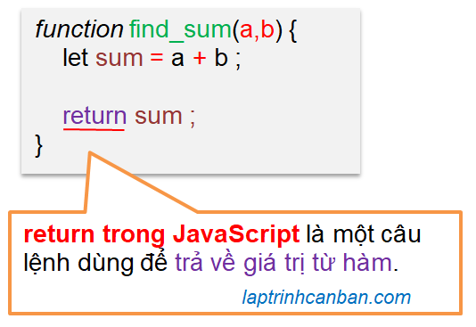

Hướng dẫn cách dùng return trong JavaScript. Bạn sẽ học được khái niệm Return là gì trong JavaScript, cách dùng return để trả về giá trị trong hàm JavaScript, cách return nhiều giá trị trong javascript, cách sử dụng return true false trong Javascript, cũng như cách ứng dụng return để dừng chương trình trong Javascript sau bài học này.
Return là gì trong JavaScript
Return trong JavaScript là câu lệnh dùng để trả về giá trị từ hàm. Return có tác dụng kết thúc hàm và trả lại điều khiển cũng như kết quả xử lý hàm cho người gọi. Chúng ta có thể sử dụng hoặc lược bỏ return khi khai báo hàm trong JavaScript, và một hàm có chứa return trong JavaScript được gọi là hàm trả về giá trị trong JavaScript.

Cách dùng return trong hàm trả về giá trị trong JavaScript
Khi sử dụng return trong hàm trả về giá trị trong JavaScript, chúng ta viết giá trị trả về của hàm đằng sau lệnh return như sau:
function tên hàm (tham số 1, tham số 2, …) {
Câu lệnh 1 trong hàm;
Câu lệnh 2 trong hàm;
…
return giá trị trả về;
}
Một giá trị sẽ được trả về sau khi gọi hàm trong JavaScript. Chúng ta có thể lưu giá trị này vào một biến bằng cách sử dụng toán tử = để sử dụng sau này.
let biến = tên hàm (tham số 1, tham số 2, …)
Ví dụ cụ thể:
function add(x, y){ |
Trong hàm trên, chúng ta tiến hành tính tổng của các giá trị truyền vào hàm, gán tổng vào một biến và sau đó trả về giá trị của biến này.
Lại nữa, chúng ta có thể viết trực tiếp biểu thức đằng sau lệnh return như sau:
function add(x, y){ |
Cách dùng return trong hàm không trả về giá trị trong JavaScript
Khi sử dụng return trong hàm không trả về giá trị trong JavaScript, chúng ta chỉ viết lệnh return vào cuối hàm như sau:
function tên hàm (tham số 1, tham số 2, …) {
Câu lệnh 1 trong hàm;
Câu lệnh 2 trong hàm;
…
return;
}
Ví dụ cụ thể:
function myfunc(){ |
Lại nữa, khi chúng ta khai báo một hàm không trả về giá trị trong JavaScript, chúng ta cũng có thể lược bỏ đi lệnh return. Ví dụ ở trên có thể viết lại như sau:
function myfunc(){ |
Lưu ý, mặc dù các hàm không trả về giá trị trong JavaScript không trả về một giá trị nào tương ứng với các giá trị truyền vào hàm, tuy nhiên điều đó không có nghĩa là các hàm này không trả về bất cứ thứ gì cả. Thực chất, một giá trị mặc định undefined sẽ được trả về khi chúng ta không chỉ định một giá trị cụ thể trả về từ hàm. Ví dụ:
function myfunc(){ |
Return nhiều giá trị trong javascript
Về cơ bản, chúng ta chỉ có thể ghi một giá trị trả về đằng sau lệnh return. Tuy nhiên chúng ta cũng có thể dễ dàng return nhiều giá trị trong javascript bằng cách chỉ định giá trị trả về này là một đối tượng chứa nhiều phần tử như mảng để chứa tất cả các giá trị cần trả về từ hàm trong JavaScript.
Return nhiều giá trị trong javascript dưới dạng mảng và gán kết quả vào một biến
Chúng ta có thể trả về nhiều giá trị trong hàm JavaScript bằng cách lưu giữ các giá trị này vào một mảng và chỉ định mảng đó là giá trị trả về sau lệnh return. Ví dụ:
function myfunc(){ |
Một mảng sẽ được trả về sau khi gọi hàm, và chúng ta có thể gán mảng kết quả vào một biến, và truy cập vào phần tử trong mảng thông qua biến để lấy ra các giá trị trả về như sau:
x = myfunc(); |
Return nhiều giá trị trong JavaScript dưới dạng mảng và gán kết quả vào một mảng khác
Ngoài cách gán kết quả return nhiều giá trị trong JavaScrit vào một biến như ở trên, chúng ta cũng có thể gán kết quả trực tiếp vào một mảng khác, với các phần tử trong mảng đó sẽ nhận tương ứng các giá trị trả về trong mảng kết quả.
Ví dụ, chúng ta có hàm tìm max min trong JavaScript sau đây. Hàm này sẽ nhận các số vào và trả về 2 số lớn nhất và nhỏ nhất trong các số đã cho như sau:
function find_max_min(a, b, c ){ |
Để nhận kết quả trả về từ hàm, chúng ta có thể chuẩn bị một mảng chứa hai phần tử max , min, và nhận các kết quả tương ứng trả về từ hàm, sau đó gọi tên các phần tử đó ra để lấy kết quả của hàm như sau:
let [max, min] = find_max_min(2, 5, 3); |
Cách làm này sẽ rất tiện lợi khi chúng ta muốn đặt tên các biến bên ngoài hàm và nhận các giá trị tương ứng trả về từ hàm trong JavaScript
Return true false trong Javascript
Return trong JavaScript là câu lệnh dùng để trả về giá trị từ hàm. Giá trị trả về từ hàm này ngoài là các giá trị cụ thể như số, chữ trong các ví dụ mà Kiyoshi đã hướng dẫn ở trên thì cũng có thể là các giá trị thuộc kiểu Boolean với giá trị true hoặc false.
Chúng ta có thể trả về các giá trị true hoặc false này bằng lệnh return bằng cách chỉ định trực tiếp, hoặc là thông qua một biểu thức trả về kết quả boolean giống như dưới đây:
Return true false trong Javascript bằng cách chỉ định trực tiếp giá trị
Nói đơn giản thì chúng ta chỉ định trực tiếp một giá trị trả về từ hàm là true hoặc false như sau:
funtion sayhi(){ |
Ở ví dụ này, hàm sayhi() khi được chạy sẽ thực hiện một hành động (in dòng chữ Hello), sau đó trả về giá trị false bằng lệnh return.
Chúng ta thường sử dụng cách return trực tiếp giá trị ở trên khi xử lý các event trong JavaScript, trong đó return false có tác dụng dừng hoàn toàn một event sau khi đã gọi xong event đó. Và return true thì lại ngược lại, cho phép event đó có thể tiếp tục thực thi sau khi nó được gọi.
Ví dụ cụ thể, chúng ta gọi hàm sayhi() ở trên khi người dùng click vào một link, hay một button như sau:
<a href="#" onclick="return sayhi();"></a> |
Trong ví dụ này, chúng ta có một event click chuột vào đường link (chỉ định trong thẻ href), và kết quả return của hàm sayhi() sẽ quyết định chúng ta có thể mở đường link này sau khi click chuột hay không.
Do hàm sayhi() return giá trị false, nên kết quả là kể cả sau khi click vào link thì chúng ta cũng sẽ không thể mở được nó. Ngược lại nếu sửa giá trị trả về của hàm sayhi() thành return true thì sau khi click, đường link mới có thể mở được.
Return true false trong Javascript thông qua biểu thức
Một cách khác nữa để return true false trong JavaScript đó chính là sử dụng một biểu thức mà kết quả của biểu thức này thuộc dạng boolean (trả về true hoặc false). Một ví dụ điển hình đó là sử dụng biểu thức điều kiện để return true false trong JavaScript như sau:
function check_10 (x) { |
Ở ví dụ này, kết quả của hàm check_10() sẽ quyết định việc dòng chữ Số đã cho lớn hơn 10 có được in ra màn hình console.log hay không.
Chúng ta thường sử dụng cách return true false thông qua biểu thức ở trên trong các hàm có mục đích đánh giá giá trị trong JavaScript. Các giá trị sẽ được đánh giá trong hàm trước khi quyết định sẽ trả về giá trị true hay false từ hàm đó, và sử dụng giá trị này như là đầu vào cho một xử lý khác.
Ví dụ, chúng ta viết lại hàm ở trên thành một hàm kiểm tra một chuỗi có phải là địa chỉ ip hay không như sau:
function check_ip (str) { |
Ở ví dụ này, chúng ta sử dụng hàm check_ip() để đánh giá một chuỗi có phải được viết theo đúng cú pháp của một địa chỉ ip hay không, và return các kết quả true hoặc false về từ hàm.
Dừng chương trình trong Javascript bằng return
Return có tác dụng kết thúc hàm và trả lại điều khiển cũng như kết quả xử lý hàm cho người gọi, do đó chúng ta có thể sử dụng return để dừng chương trình trong Javascript.
Trong ví dụ sau, chúng ta sẽ dừng chương trình trong Javascript bằng cách đặt lệnh return vào vị trí cần dừng chương trình:
function check_old(old){ |
Trong ví dụ này, nếu tuổi nhập vào dưới 18, dòng Em chưa 18 sẽ được in ra màn hình, sau đó lệnh return được thực hiện và chương trình cũng kết thúc tại đây. Do đó các lệnh xử lý điều kiện còn lại trong chương trình cũng sẽ không thực thi.
Tổng kết
Trên đây Kiyoshi đã hướng dẫn bạn về cách dùng return để trả về giá trị trong hàm JavaScript, cũng như xử lý trong hàm trả về nhiều giá trị trong JavaScript rồi. Để nắm rõ nội dung bài học hơn, bạn hãy thực hành viết lại các ví dụ của ngày hôm nay nhé.
Và hãy cùng tìm hiểu những kiến thức sâu hơn về JavaScript trong các bài học tiếp theo.
HOME>> học javascript - lập trình javascript cơ bản>>08. hàm trong javascript